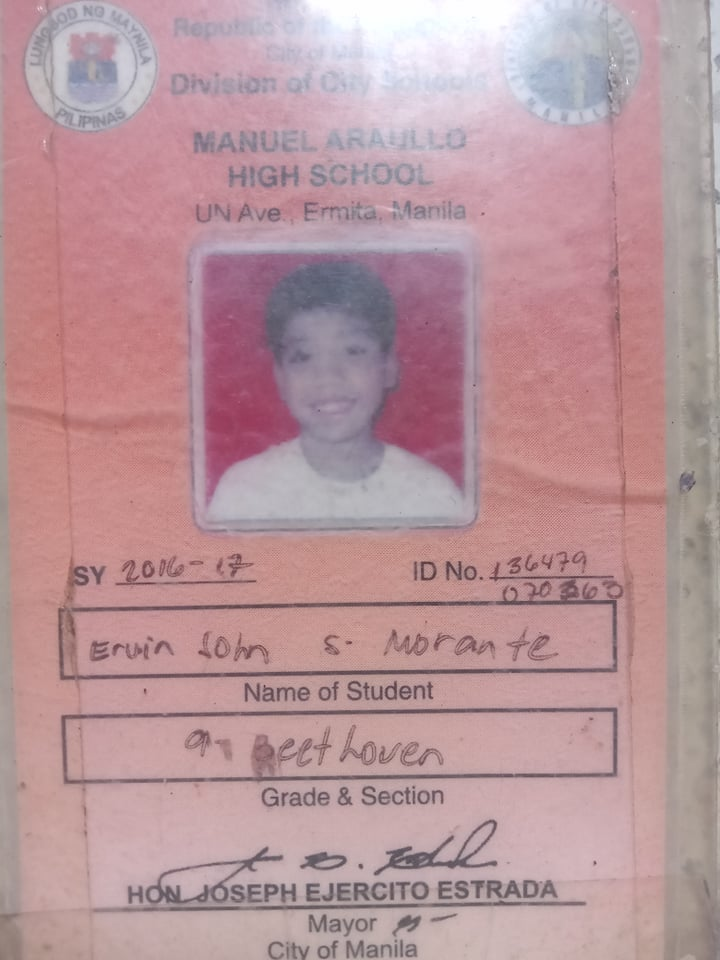

My high school days was so lit and was the best chapter of my life. It is truly that high school life was the best and unforgettable moment in life. In my high school days, I experienced many things. I experienced hanging out with my friends even if disobeying my parents. High school is when I became addicted in playing computer. I remembered not eating in school just to save money for playing computer. Also in high school, I experienced going home late night. In high school, there are always after school hangouts. My class ends in the afternoon and after that, we will go to my classmate’s house just to waste time. Sometimes we are going anywhere., far from where our school is. I also experienced skipping classes with my friends. We will skip class and it’s either we will play computer or, we will just hangout somewhere. I didn’t experience any illegal things or habits in high school. I'm a good person and trying that kind of things are not my thing. Of course most of all, having crushes cannot be avoided when in high school. I failed to have a girlfriend when in high school but, I had a lot of flings back then. I still remember the people I had a crush back then but I will never forget my crush when I was grade 10 because I failed to confess my feelings to her. Until now, I haven’t even told her. Back then, I have a feeling that she also likes me because of the changes of her gestures and treatment towards me. We are classmates back then. I’m a shy and unvocal person, the thing we called “torpe”. I remembered back then, I was planning and about to confess in our prom. I’m planning to dance her lastly and co fess to her but it was all ruined because of certain circumstances. That is my biggest regret in my high school and until today, I’m carrying that. I think until now she still doesn’t have a boyfriend or suitors so, maybe one of these days, I will confess to her so wish me luck.